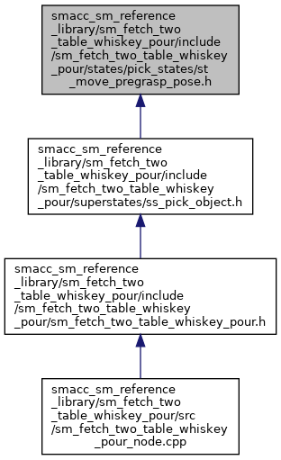

SMACC
smacc_sm_reference_library
sm_fetch_two_table_whiskey_pour
include
sm_fetch_two_table_whiskey_pour
states
pick_states
Classes
|
Namespaces
st_move_pregrasp_pose.h File Reference
This graph shows which files directly or indirectly include this file:

Go to the source code of this file.
Classes
struct
sm_fetch_two_table_whiskey_pour::pick_states::StMovePregraspPose
Namespaces
sm_fetch_two_table_whiskey_pour
sm_fetch_two_table_whiskey_pour::pick_states
Generated by
1.8.13
 1.8.13
1.8.13